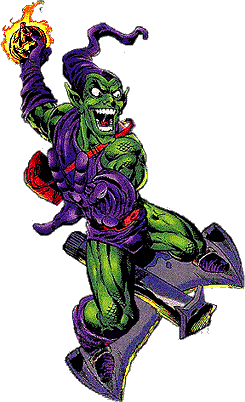
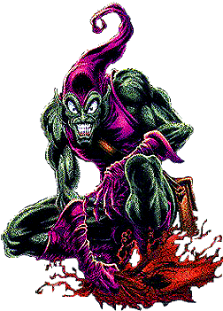
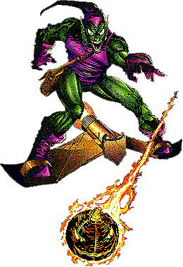

|
 |
Name: Norman Osborn ID: Secret Relatives: Emily, Wife (Deceased)...Harry, Son (Deceased)..,Liz Allen Osborn, Daughter-in-law...Normy Osborn, Grandson...Amberson, Father (Deceased)...Acton, Great-Grandfather (Deceased) Affiliates: Member of the Brotherhood of the Scriers...Former partner of Crime-Master, Kraven the Hunter, Gaunt, Dr. Angst, Jack-O-Lantern II & Override. Enemies: Spider-Man, Hobgoblin, The Headsman Powers: Superhuman Strength, Large arsenal of weaponry, including "Pumpkin-Bombs", Gas-Bombs, "Electro-Gloves", & his trusty Goblin Glider which caused Norman's "Death" back in Amazing Spider-Man #122. Origin: A co-owner of a leading chemical manufacturer, Norman Osborn was obsessed with power...He had great wealth and great power already, but it was not enough...Norman came across notes pertaining to a chemical formula made by his ex partner, Mendell Stromm...It was to increase a person's intellect and physical strength...After experimenting with this formula, Osborn had it turn green and explode near him...The after effects not only gave him super-human powers but drove him insane and quickly became Spider-Man's most deadly villain as the Green Goblin! |
|
1st
App.: (Green Goblin) Amazing Spider-Man #14 Origin Issues: Amazing Spider-Man #39, Spectacular Spider-Man Magazine #2, Web Of Spider-Man Annual #7 Spider-Man
Appearances: (Green
Goblin) Amazing Spider-Man #14, 17, 18
(Cameo), 23, 26, 27, 39, 40, 47 (flashback), 66 (Cameo), 96-98, 121-123
& V2 #23-25...Spectacular Spider-Man Magazine
#2...Spectacular Spider-Man #250 (In Dream) &
263...Spider-Man #75, 97 & 98, V2 #25 & 44-46...Chapter
One #8 & 10...Untold Tales Of Spider-Man #18, 22 &
25...Spider-Man: Blue #1 |
 |
Other
Appearances. (Green Goblin)
Fantastic Four #405 (Cameo)
(Only as Norman Osborn)
Iron Man V3 #1 & 37...X-Men
#73...Defenders V2 #10
|  |
Spider-Man Fear Rating: 10 (out of 10) |
 Successors To The Goblin Throne
Successors To The Goblin Throne